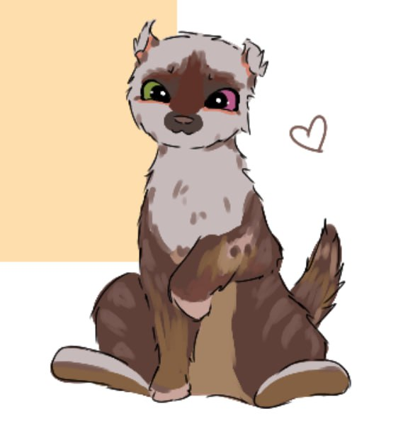
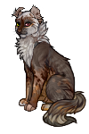

Улыбочка


просто МИЛЕйший котик ДОБРЕЙШЕЙ души человек кот сущность радость улыбка лучик солнца ето все про улыбочку
вам мжет показаться что это кошка или что кот кто же это на самом деле? мы и сами не знаем?! возможно небинарная личность, возможно кот с гендерной дисморфией... надуется с кем-нибудь тогда и узнаем пол..
он как печенька с шоколадом такой коришневенький очень похож на хоречка!!! очень грязного хоречка вы его чистым никогда не увидите просто ЭВЕР
казалось бы ето негигиенично с таким количеством блох ходить однако чудо ето не пугает и она медитативно пересчитывает каждую блошку а сюсечка смотрид. раньше сюся его чистила как и остальных но в один момент ето стало немного бесполезно... туннель в вт все копаеца
Галерея

@raschudesnyshka

@raschudesnyshka